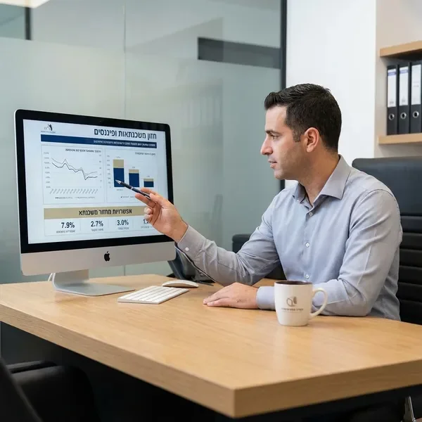

קיבלתם סירוב מהבנק? אתם לא לבד. מצבים רבים כמו היסטוריה אשראית מורכבת, הכנסה לא סדירה, או מצב תעסוקתי מיוחד יכולים להוביל לסירוב. אבל סירוב אחד לא אומר שאין פתרון.
הצוות שלנו מתמחה בייעוץ משכנתאות למסורבי בנקים ומכיר לעומק את הדרישות של כל המוסדות הפיננסיים בישראל. אנו יודעים איך להציג את המקרה שלכם באור הטוב ביותר, איזה מסמכים להכין, ואיך לפנות למוסדות שמתאימים בדיוק למצב שלכם.
השירות שלנו כולל ניתוח מעמיק של המצב הפיננסי שלכם, זיהוי הבעיות שהובילו לסירוב, והכנת אסטרטגיה מותאמת אישית. אנו עובדים עם מגוון רחב של בנקים וחברות משכנתאות, ולכן יש לנו יכולת למצוא פתרון גם במקרים המורכבים ביותר.
עסקאות נדל"ן מורכבות דורשות גישה מקצועית ומותאמת. אם אתם מתמודדים עם אחד מהמצבים הבאים, אנחנו כאן בשבילכם: רכישת נכסים מרובים, משכנתא לעצמאים עם הכנסה משתנה, נכסים מסחריים, משכנתא לנכס בבנייה, או מצבים פיננסיים לא סטנדרטיים.
המומחיות שלנו במשכנתא לעסקאות מורכבות מאפשרת לנו להבין את הצרכים הייחודיים שלכם ולמצוא פתרונות יצירתיים. אנו מלווים אתכם בכל שלב: מהערכת היתכנות ראשונית, דרך הכנת תיק מסמכים מקיף, ועד לניהול המשא ומתן עם המוסדות הפיננסיים.
הניסיון שלנו מלמד שעסקאות מורכבות דורשות תכנון מדויק ותיאום בין גורמים רבים. אנו מספקים ליווי צמוד לאורך כל התהליך, מתאמים בין הצדדים השונים, ודואגים שהעסקה תתבצע בצורה חלקה ויעילה.
מרגישים מוצפים מהחזרי הלוואות מרובות? משלמים ריביות גבוהות על כמה הלוואות שונות? שירות איחוד ההלוואות שלנו יכול לשנות את המצב הפיננסי שלכם לטובה.
איחוד הלוואות ומשכנתאות בישראל מאפשר לכם לאחד את כל ההתחייבויות הפיננסיות שלכם למסלול אחד, עם החזר חודשי אחד ותנאים משופרים. זה יכול להוביל לחיסכון משמעותי בתשלום החודשי, להקלה בניהול הפיננסי, ולשיפור איכות החיים.
התהליך שלנו מתחיל בניתוח מקיף של כל ההלוואות והמשכנתאות הקיימות שלכם. אנו בודקים את הריביות, התנאים, ויתרות החוב של כל הלוואה. לאחר מכן, אנו מחפשים את האפשרות הטובה ביותר לאיחוד, תוך התחשבות במצב הפיננסי הכולל שלכם ובמטרות שלכם לטווח הארוך.
השירות כולל גם בדיקת כדאיות מעמיקה, כדי לוודא שאיחוד ההלוואות אכן משתלם עבורכם. לפעמים, הפתרון הטוב ביותר הוא איחוד חלקי או מחזור חלק מההלוואות בלבד, ואנו נמליץ על הדרך המיטבית בדיוק עבורכם.
שוק המשכנתאות משתנה כל הזמן, והריביות עולות ויורדות. אם לקחתם משכנתא לפני מספר שנים, יתכן שכדאי לכם לבדוק אפשרות למחזור. מחזור משכנתא יכול להוביל לחיסכון של אלפי שקלים בחודש ומאות אלפי שקלים לאורך חיי ההלוואה.
אנו בוחנים את המשכנתא הקיימת שלכם, משווים לתנאים הנוכחיים בשוק, ומחשבים בדיוק האם מחזור משתלם. התהליך כולל גם בדיקה של עמלות פירעון מוקדם, עלויות המחזור, והשוואה מדויקת של התנאים החדשים לעומת הקיימים.

עצמאים מתמודדים עם אתגרים ייחודיים בתהליך קבלת משכנתא. הכנסה משתנה, דוחות שנתיים מורכבים, וחוסר ודאות יכולים להקשות על קבלת אישור. אנו מתמחים בייעוץ משכנתאות לעצמאים ויודעים בדיוק איך להציג את המקרה שלכם.
אנו עוזרים לכם להכין את כל המסמכים הנדרשים, מסבירים לבנק את מודל העסקי שלכם, ומדגישים את היציבות והפוטנציאל שלכם. הניסיון שלנו מראה שעם הכנה נכונה והצגה מקצועית, עצמאים יכולים לקבל תנאי משכנתא מצוינים.
רכישת דירה ראשונה היא צעד משמעותי ומרגש. אנו מלווים רוכשים ראשונים בכל שלב של התהליך, מסבירים את כל האפשרויות, ועוזרים לכם לקבל החלטות מושכלות. אנו דואגים שתבינו את כל ההיבטים של המשכנתא ושתקבלו את התנאים הטובים ביותר.
השירות שלנו כולל הסבר מפורט על סוגי המסלולים השונים, הזכויות המיוחדות לרוכשים ראשונים, ותכנון פיננסי ארוך טווח. אנו גם עוזרים לכם להבין את כל העלויות הכרוכות ברכישה ולתכנן את התקציב בצורה נכונה.
משכנתא לדירת השקעה דורשת גישה שונה ממשכנתא למגורים. אנו מתמחים בליווי משקיעים בנדל"ן ועוזרים לכם למצוא את המימון האופטימלי לנכס ההשקעה שלכם. אנו בוחנים את התשואה הצפויה, מחשבים את התזרים החודשי, ומוצאים את המבנה המשכנתאי שמתאים למטרות ההשקעה שלכם.
הניסיון שלנו בתחום ההשקעות מאפשר לנו לספק ייעוץ מקצועי לא רק לגבי המשכנתא, אלא גם לגבי היבטים מיסויים, תכנון תזרים, ואסטרטגיית השקעה כוללת.
מפגש אישי או טלפוני להבנת הצרכים והמצב הפיננסי שלכם
בדיקה מעמיקה של האפשרויות והכנת תוכנית פעולה מותאמת
ליווי בהכנת כל המסמכים הנדרשים והגשה למוסדות המתאימים
ניהול המשא ומתן מול המוסדות הפיננסיים לקבלת התנאים הטובים ביותר
ליווי עד לקבלת האישור הסופי וחתימה על המסמכים
קבעו פגישת ייעוץ חינם ותגלו איך אנחנו יכולים לעזור לכם למצוא את הפתרון המשכנתאי המושלם
צרו קשר עכשיו